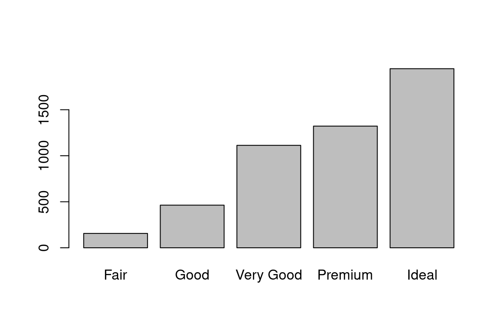
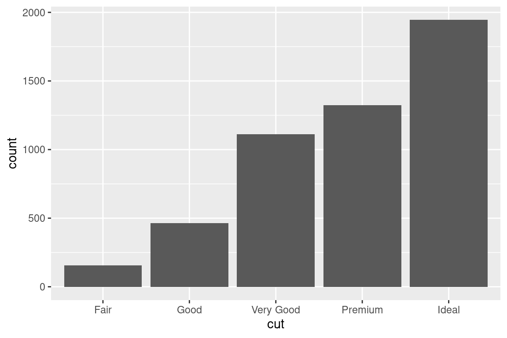
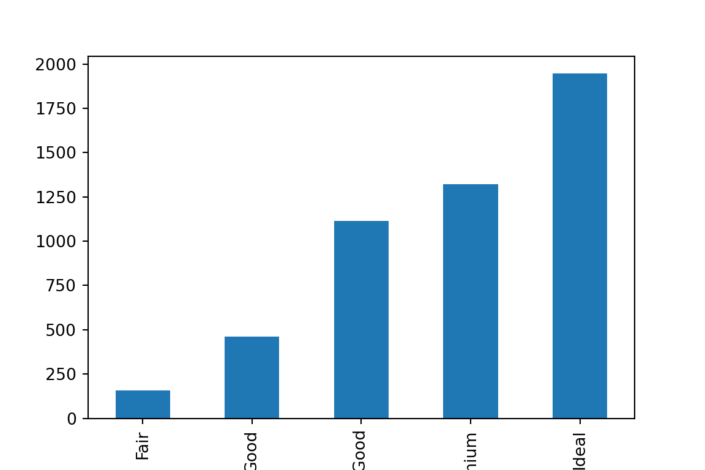
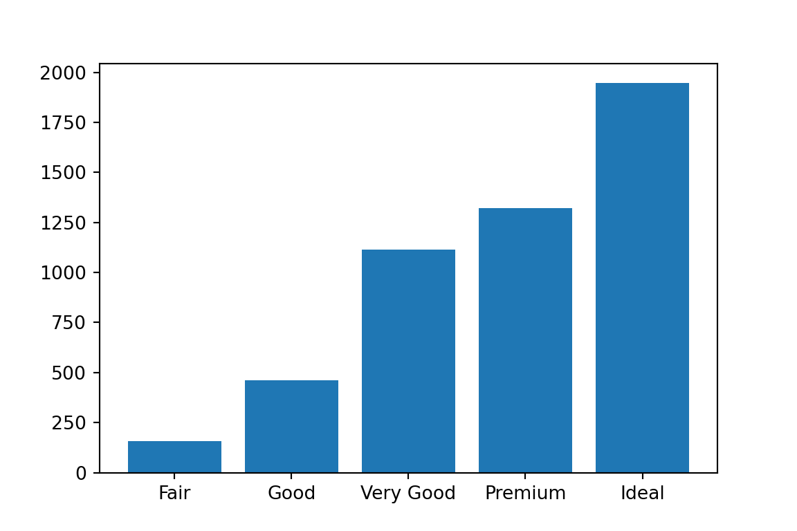

library("reticulate")
# reticulate::install_miniconda()
use_python(file.path(miniconda_path(), "bin", "python3.11"))
# py_install("pandas")
# py_install("matplotlib")
# py_install("seaborn")Barplot
First explanation
A barplot, also known as a bar chart or bar graph, is a common type of data visualization used to represent categorical data. It displays data in rectangular bars or columns, where the length or height of each bar is proportional to the value it represents. Barplots are particularly useful for comparing and visualizing the distribution, frequency, or comparison of different categories or groups.
About the barplot
Key characteristics of a barplot include:
Vertical or Horizontal Bars: Barplots can have vertical bars (columns) or horizontal bars (rows) depending on the orientation of the plot.
Categories on One Axis: One axis (usually the x-axis for vertical barplots or the y-axis for horizontal barplots) represents the categories or groups being compared. These categories can be nominal or ordinal data, such as product names, time periods, or survey responses.
Values on the Other Axis: The other axis (usually the y-axis for vertical barplots or the x-axis for horizontal barplots) represents the values or quantities associated with each category. These values can be counts, frequencies, percentages, or any numerical data.
Bar Length or Height: The length or height of each bar corresponds to the value it represents. Longer bars indicate larger values, while shorter bars indicate smaller values.
Spacing Between Bars: Typically, there is a small gap or spacing between adjacent bars to visually separate them.
Color or Patterns: Different categories or groups are often represented using different colors or patterns to distinguish them within the plot.
*Labels and Titles: Barplots include labels for the categories and axes, as well as a title to provide context and clarity.
Barplots are commonly used in data analysis and data visualization for various purposes, including:
Comparing Categories: Barplots are effective for comparing the distribution of categories or groups. For example, you can use a barplot to compare sales figures for different products.
Displaying Frequencies: Barplots are often used to display the frequency or count of occurrences of categorical variables. This is common in histograms, which are a specific type of barplot for continuous data grouped into bins.
Showing Relative Proportions: Stacked barplots or grouped barplots can be used to show the relative proportions or composition of a whole across different categories. For example, you can use a stacked barplot to show how the budget for a project is allocated among different expense categories.
Comparing Data Across Multiple Factors: Grouped barplots can be used to compare data across multiple factors or dimensions. Each group of bars represents a combination of factors, allowing for more complex comparisons.
Overall, barplots are versatile and widely used in data science, data analysis, and data communication for their ability to provide a clear and intuitive representation of categorical data.
Visual alphabet
The visual alphabet of a barplot refers to the visual elements and attributes that can be manipulated to effectively convey information and insights in a bar chart. These visual elements include:
Bars: The primary visual element of a barplot is the rectangular bars or columns. The length or height of each bar represents the value of a specific category or group.
Axis: A barplot typically has two axes: the horizontal axis (x-axis) and the vertical axis (y-axis). The x-axis represents the categories or groups, while the y-axis represents the values or frequencies.
Bar Length or Height: The most critical encoding in a barplot is the length or height of the bars. Longer bars correspond to larger values, and shorter bars correspond to smaller values.
Spacing Between Bars: There is often a small gap or spacing between adjacent bars to visually separate them. The width of the bars and the amount of spacing can affect the perception of the chart.
Colors or Patterns: Different categories or groups are often represented using different colors or patterns to distinguish them within the plot. Colors can be used to highlight specific bars or groups.
Labels: Labels are essential for providing context and information. The x-axis labels identify the categories or groups, and the y-axis label describes the units or measurement being represented.
Title: A title is typically included at the top of the chart to provide an overall description or context for the data being displayed.
Tick Marks and Gridlines: Tick marks along the axes indicate specific values or intervals, while gridlines can aid in reading values accurately.
Legend: When multiple groups or data series are present, a legend may be added to explain the colors or patterns used to represent each group.
Annotations: Annotations, such as text labels or arrows, can be added to highlight specific data points or provide additional information.
Baseline: A baseline or zero-reference line is a horizontal line at the bottom of the plot, often representing zero or a specific reference point. It helps in comparing the values of the bars relative to this reference line.
Orientation: Barplots can be oriented vertically or horizontally, depending on the data and the visualization’s purpose. Vertical barplots are more common, but horizontal barplots are useful when dealing with long category labels or when emphasizing one-dimensional comparisons.
Axis Scales: The choice of linear or logarithmic scales on the axes can affect how the data is perceived and compared.
The visual alphabet of a barplot provides data visualization designers with various tools and choices to effectively communicate information. Proper selection and customization of these visual elements can enhance the clarity and impact of the chart, making it easier for viewers to interpret and draw insights from the data.
Programming
First we can configure the environment for mixed programming. Using another engine will need another setup.
library("knitr")
opts_chunk$set(
fig.width = 6,
fig.height = 4,
message = FALSE,
warning = FALSE,
echo = TRUE,
results = "asis"
)library("ggplot2")
library("magrittr")
library("dplyr")
diamonds %<>%
sample_n(5000) # disminuir los datos p
# diamonds %>%
# glimpseimport numpy as np
import pandas as pd
import matplotlib.pyplot as plt
import seaborn as sns
import matplotlib.colors
# You can uncomment this line to change the style of the graphs.
# plt.style.use('ggplot')
diamonds = r.diamondsUsing r-base
table(diamonds["cut"]) -> tb
barplot(tb)
Step-by-Step Breakdown:
table(diamonds["cut"]) -> tb: In this line, a table of counts is created using the table() function. It counts the occurrences of each unique value in the “cut” column of the “diamonds” dataset and assigns the result to a variable named “tb.” Essentially, it creates a frequency table that shows how many times each category in the “cut” column appears in the dataset.
barplot(tb): This line generates a barplot based on the frequency table “tb” created in the previous step. The barplot() function takes the frequency table as input and creates a bar chart where:
- The x-axis represents the unique categories in the “cut” column.
- The y-axis represents the count or frequency of each category.
- Each bar’s length corresponds to the count of occurrences for the respective category.
The resulting barplot provides a visual representation of how the different “cut” categories are distributed within the “diamonds” dataset. You can observe the relative frequencies or counts of each category and compare them visually using the bars.
In summary, the code takes the “cut” column of the “diamonds” dataset, creates a frequency table, and then generates a barplot to display the distribution of the “cut” categories using bars of varying heights to represent the counts or frequencies of each category. Barplots are commonly used to visualize the distribution of categorical data and make comparisons between categories.
Using ggplot
ggplot(diamonds) +
aes(x = cut) +
geom_bar()
Step-by-Step Breakdown:
ggplot(diamonds): This line initializes a new ggplot2 plot object by specifying the dataset “diamonds” as the data source for the plot. It sets up the foundation for creating various types of visualizations.
aes(x = cut): Within the ggplot() function, the aes() function is used to define the aesthetics (visual properties) of the plot. In this case, it specifies that the “x” aesthetic (horizontal position) of the plot should be mapped to the “cut” column of the dataset. This means that the categories in the “cut” column will be used as the x-axis values for the barplot.
geom_bar(): This function, called within the ggplot() pipeline, adds the “geom” (geometric object) layer to the plot. In this case, geom_bar() is used to create a barplot. It interprets the aesthetics defined earlier (mapping “cut” to the x-axis) and constructs a bar chart based on the counts or frequencies of each unique category in the “cut” column.
- Each unique category in the “cut” column becomes a separate bar on the x-axis.
- The height of each bar represents the count or frequency of that category in the dataset.
In summary, the code uses the ggplot2 package to create a barplot that displays the distribution of categories in the “cut” column of the “diamonds” dataset. Each category is represented as a bar, and the height of each bar corresponds to the count of occurrences of that category in the dataset. This visualization allows you to easily compare the frequencies of different “cut” categories in the dataset.
Using pandas
tb = diamonds.groupby("cut").size()
plt.figure()
tb.plot(kind = "bar")
plt.show()
pandas plotting summary
tb = diamonds.groupby("cut").size(): In this line of code, the groupby() method is used to group the rows of the “diamonds” DataFrame by the unique values in the “cut” column. The size() function is then applied to each group to count the number of occurrences of each unique value (category) in the “cut” column. The result is a Pandas Series (tb) where the index contains the unique categories (“cut” values) and the values represent the counts of each category.
plt.figure(): This line initializes a new Matplotlib figure. It sets up the canvas or space where the barplot will be drawn.
tb.plot(kind="bar"): The plot() function is used to create the barplot based on the data in the Pandas Series “tb.” The kind=“bar” argument specifies that a barplot should be generated. This function generates a vertical bar chart where:
- The x-axis represents the unique categories (“cut” values).
- The y-axis represents the count or size of each category, as determined by the “tb” Series.
plt.show(): Finally, this line displays the barplot that was created using Matplotlib.
In summary, the code groups the “diamonds” DataFrame by the “cut” column, counts the occurrences of each unique category, and then creates and displays a barplot. The resulting barplot visually represents the distribution of different “cut” categories in the dataset, allowing you to compare the frequency or count of each category using the bars.
Using seaborn
sns.countplot(x = "cut", data = diamonds, color = "navy")
plt.show()Explanation of seaborn use
sns.countplot(x="cut", data=diamonds, color="navy"): In this line, the Seaborn countplot() function is used to create the countplot. Here’s what each part of this function does:
x="cut": This specifies the variable to be plotted on the x-axis. In this case, it’s the “cut” column from the DataFrame “diamonds,” which contains the categories of diamond cuts.data=diamonds: This specifies the DataFrame from which the data should be drawn, in this case, the “diamonds” DataFrame.
color="navy": This sets the color of the bars in the countplot to navy blue.
The countplot() function automatically calculates the count of each unique category in the “cut” column and creates vertical bars to represent these counts.
plt.show(): This line displays the countplot using Matplotlib. Once you’ve created the plot with Seaborn, you can use Matplotlib functions like plt.show() to display it.
In summary, the code creates a countplot using Seaborn to visualize the distribution of diamond cuts in the “cut” column of the “diamonds” DataFrame. Each bar in the countplot represents a unique diamond cut category, and the height of the bar corresponds to the count or frequency of that category in the dataset. The bars are colored navy blue for better visualization. This type of plot is helpful for understanding the distribution of categorical data and comparing the frequencies of different categories.
Using matplotlib
plt.bar(tb.index.to_list(), tb.values)
plt.show()
How it works
plt.bar(tb.index.to_list(), tb.values): In this line, the plt.bar() function is used to create the barplot. Here’s what each part of this function does:
tb.index.to_list(): This part retrieves the index (labels or categories) of the tb Pandas Series and converts it to a Python list. These index values are assumed to represent the categories or groups for which you want to create the bars on the x-axis.tb.values: This part retrieves the values associated with each category in the tb Series. These values represent the counts or frequencies of each category.
Together, tb.index.to_list() provides the x-axis (categories), and tb.values provides the y-axis (counts or frequencies), which are used to create the bars in the barplot.
plt.show(): This line displays the barplot using Matplotlib. Once you’ve created the plot with plt.bar(), you use plt.show() to render and display the plot.
In summary, the code generates a basic barplot using Matplotlib, displaying the distribution of counts or frequencies of different categories. The x-axis represents the categories (retrieved from the index of the tb Series), and the y-axis represents the counts (retrieved from the values of the tb Series). This type of barplot is useful for visualizing and comparing d
Comments
Reordering bars in a bar chart is a common requirement when you want to display the bars in a specific order, such as ordering them by frequency or a custom criterion. I’ll provide solutions for both R and Python (using Matplotlib and Seaborn) to reorder bars in a bar chart:
Reordering Bars in R (ggplot2): In R’s ggplot2, you can use the reorder() function within the aes() function to reorder bars based on a specific variable.
Reordering Bars in Python (Matplotlib): In Python’s Matplotlib, you can use the numpy.argsort() function to reorder the bars based on a specific variable.
Reordering Bars in Python (Seaborn): If you prefer using Seaborn, you can achieve bar reordering by using the order parameter in sns.barplot()
Creating horizontal bar charts in both R and Python is straightforward. Both languages provide solutions for creating horizontal bar charts in R using ggplot2 and in Python using Matplotlib and Seaborn.
Horizontal Bar Chart in R (ggplot2): In R’s ggplot2, you can create a horizontal bar chart using the geom_bar() function while specifying the aesthetics (aes()) for the y-axis. Making y = category and x = count aesthetics are used to create a horizontal bar chart where the “category” variable is on the y-axis, and the “count” variable is on the x-axis.
Horizontal Bar Chart in Python (Matplotlib): In Python’s Matplotlib, you can create a horizontal bar chart using the plt.barh() function to specify horizontal bars. So, plt.barh(categories, counts) is used to create a horizontal bar chart where the “categories” list is on the y-axis, and the “counts” list is on the x-axis.
Horizontal Bar Chart in Python (Seaborn): In Python’s Seaborn, you can create a horizontal bar chart using the sns.barplot() function and specifying the orient parameter as “h” for horizontal. By making orient=“h” is used in sns.barplot() to specify that the chart should be horizontal.